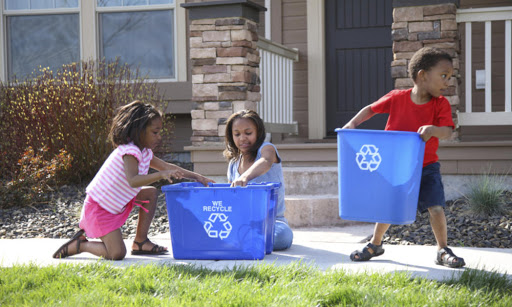
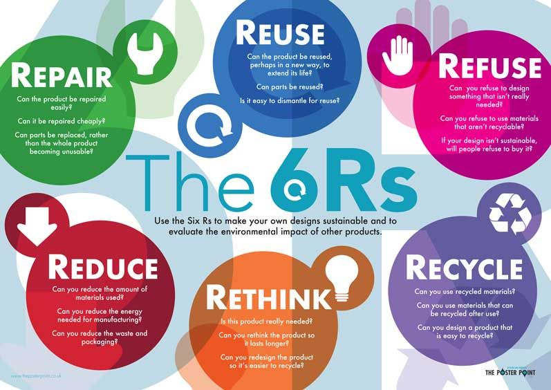

Let's Explore how we can make our Environment clean and green
As we know making our Environment clean and green is very necessary as our resources are limited and we need to save it for our future generations so here are the quick tips for you to save resources and make our Environment clean and green -
1> Turn it off.
Artificial lighting accounts for 44 percent of electricity use in office buildings. Make it a habit to turn off the lights when you're leaving any room for 15 minutes or more. Same goes for electronics; switch off power strips and unplug electrical devices when you're not using them.
2> Bio and Non - Bio Degerable
Many of us have heard it but we forget easily . If we can make two differnet dustbins for Bio and Non - Bio Degerable then it can help our environment alot so now the question arises what is Bio Degerable and Non - Bio Degerable waste . Let's see
Bio Degerable Waste -
Biodegradable materials are those, which degrade or break down in a natural manner. In other words, their decomposition happens with the help of natural agents like sunlight, microorganisms, water, ozone and more which turns it into organic manure.
Thus, these substances are non-toxic to the environment comprising of only natural materials. For instance, fruits, vegetables, flowers, plants, animals, water, paper and more are examples of biodegradable waste.
They transform into simpler units and then we use them as fertilizers, manure, compost, biogas and more. Therefore, this makes them eco-friendly.
Non - Biodegradable -
Non-biodegradable substances are materials which do not degrade easily. As they are synthesized and do not occur naturally, degradation is impossible with these products. Therefore, when they stay in the ecosystem for a long period and do not decompose, they harm our environment.
For instance, plastics, chemicals, rubber, paints, batteries, metals and all fall in this category. The drawback is that in place of returning to the environment, they transform into solid waste which poses a great threat to the environment and health. This does not make it eco-friendly and we must avoid using it at all costs.
3> Use Cold Water and Renewable Energy -
Using cold water can save up to 80 percent of the energy required to wash clothes. Choosing a low setting on the washing machine will also help save water. We should use Renewable Energy such as Solar Energy , Wind Energy to save the non renewable resources such as Coal and Petroleum and using renewable energy will also decrease Global Warming and Pollution
4> Following the 6 Rs -
By following the 6 Rs of waste managment that are Reuse , Refuce , Recycle , Rethink , Reduce , Repair
